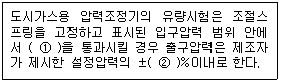

가스기능사 (2010-01-31 기출문제)
1과목: 가스안전관리
1. 아세틸렌이 은, 수은과 반응하여 폭발성의 금속 아세틸라이드를 형성하여 폭발하는 형태는?
- 분해폭발
- 화합폭발
- 산화폭발
- 압력폭발
(정답률: 83%)

2. 일반도시가스사업자 정압기 입구측의 압력이 0.6MPa일 경우 안전밸브 분출부의 크기는 얼마 이상으로 해야 하는가?
- 20A 이상
- 30A 이상
- 50A 이상
- 100A 이상
(정답률: 56%)
3. 독성가스 배관은 안전한 구조를 갖도록 하기 위해 2중관 구조로 하여야 한다. 다음 가스 중 2중관으로 하지 않아도 되는 가스는?
- 암모니아
- 염화메탄
- 시안화수소
- 에틸렌
(정답률: 62%)
4. 다음 가스의 일반적인 성질에 대한 설명 중 틀린 것은?
- 염산(HCl)은 암모니아와 접촉하면 흰 연기를 낸다.
- 시안화수소(HCN)는 복숭아 냄새가 나는 맹독성 기체이다.
- 염소(Cl2)는 황녹색의 자극성 냄새가 나는 맹독성 기체이다.
- 수소(H2)는 저온·저압하에서 탄소강과 반응하여 수소취성을 일으킨다.
(정답률: 75%)
5. C2H2제조설비에서 제조된 C2H2를 충전용기에 충전 시 위험한 경우는?
- 아세틸렌이 접촉되는 설비부분에 동함량 72%의 동합금을 사용하였다.
- 충전 중의 압력을 2.5MPa 이하로 하였다.
- 충전 후에 압력이 15℃에서 1.5MPa 이하로 될 때까지 정치하였다.
- 충전용 지관은 탄소함유량이 0.1% 이하의 강을 사용하였다.
(정답률: 79%)
6. 고압가스 용기의 어깨부분에 “FP : 15MPa”라고 표기되어 있다. 이 의미를 옳게 설명한 것은?
- 사용압력이 15MPa이다.
- 설계압력이 15MPa이다.
- 내압시험압력이 15MPa이다.
- 최고충전압력이 15MPa이다.
(정답률: 80%)
7. 부탄(C4H10)의 위험도는 약 얼마이가? (단, 폭발범위는 1.9~8.5%이다.)
- 1.23
- 2.27
- 3.47
- 4.58
(정답률: 74%)
8. 다음 방류둑의 구조에 대한 설명으로 틀린 것은?
- 방류둑의 재료는 철근콘크리트, 철골·철근콘크리트, 흙 또는 이들을 조합하여 만든다.
- 철근콘크리트는 수밀성 콘크리트를 사용한다.
- 성토는 수평에 대하여 45° 이하의 기울기로 하여 다져 쌓는다.
- 방류둑은 액밀하지 않은 것으로 한다.
(정답률: 76%)
9. 초저온용기에 대한 정의로 옳은 것은?
- 임계온도가 50℃ 이하인 액화가스를 충전하기 위한 용기
- 강판과 동판으로 제조된 용기
- -50℃ 이하인 액화가스를 충전하기 위한 용기로서 용기내의 가스온도가 상용의 온도를 초과하지 않도록 한 용기
- 단열재로 피복하여 용기내의 가스온도가 상용의 온도를 초과하도록 조치된 용기
(정답률: 87%)
10. 가스계량기와 전기개폐기와의 이격거리는 최소 얼마 이상이어야 하는가?
- 10cm
- 15cm
- 30cm
- 60cm
(정답률: 70%)
11. 고압가스안전관리법에 정하고 있는 저장능력 산정기준에 대한 설명으로 옳은 것은?
- 압축가스와 액화가스의 저장탱크 능력 산정식은 동일하다.
- 저장능력 합산 시에는 액화가스 10kg을 압축가스 10m3로 본다.
- 저장탱크 및 용기가 배관으로 연결된 경우에는 각각의 저장능력을 합산한다.
- 액화가스 용기 저장능력 산정식은 W = 0.9dVz이다.
(정답률: 57%)
12. 가연성 물질을 취급하는 설비는 그 외면으로부터 몇 m 이내에 온도상승방지 설비를 하여야 하는가?
- 10m
- 15m
- 20m
- 30m
(정답률: 39%)
13. 포스겐의 취급 사항으로 잘못된 것은?
- 포스겐을 함유한 폐기액은 산성물질로 충분히 처리한 후 처분할 것
- 취급시에는 반드시 방독마스크를 착용할 것
- 환기시설을 갖출 것
- 누설 시 용기부식의 원인이 되므로 약간의 누설도 주의할 것
(정답률: 83%)
14. 압축·액화 그 밖의 방법으로 처리할 수 있는 가스의 용적이 1일 100m3 이상인 사업소에는 표준이 되는 압력계를 몇 개 이상 비치해야 하는가?
- 1개
- 2개
- 3개
- 4개
(정답률: 85%)
15. 액화석유가스를 저장하는 저장능력 10,000리터의 저장탱크가 있다. 긴급차단장치를 조작할 수 있는 위치는 해당 저장탱크로부터 몇 미터 이상에서 조작할 수 있어야 하는가?
- 3m
- 4m
- 5m
- 6m
(정답률: 66%)
16. 엘피지의 충전용기와 잔가스 용기의 보관장소는 얼마 이상의 간격을 두어 구분이 되도록 해야 하는가?
- 1.5m 이상
- 2m 이상
- 2.5m 이상
- 3m 이상
(정답률: 47%)
17. 가연성가스 제조시설의 고압가스설비(저장탱크 및 배관은 제외한다.)에는 그 외면으로부터 다른 가연성가스 제조시설의 고압가스설비와 몇 m 이상의 거리를 유지하여야 하는가?
- 2
- 3
- 5
- 10
(정답률: 45%)
18. 공기 중의 산소농도나 분압이 높아지는 경우의 연소에 대한 설명으로 틀린 것은?
- 연소속도 증가
- 발화온도 상승
- 점화 에너지의 감소
- 화염온도의 상승
(정답률: 55%)
19. 독성가스의 저장탱크에는 과충전 방지장치를 설치하도록 규정되어 있다. 저장탱크의 내용적이 몇 %를 초과하여 충전되는 것을 방지하기 위한 것인가?
- 80%
- 85%
- 90%
- 95%
(정답률: 84%)
20. 고압가스안전관리법 시행령에 규정한 특정고압가스에 해당하지 않는 것은?
- 삼불화질소
- 사불화규소
- 수소
- 오불화비소
(정답률: 60%)
21. 사업자등은 그의 시설이나 제품과 관련하여 가스사고가 발생한 때에는 한국가스안전공사에 통보하여야 한다. 사고의 통보 시에 통보내용에 포함되어야 하는 사항으로 규정하고 있지 않은 사항은?
- 시설현황
- 피해현황(인명 및 재산)
- 사고내용
- 사고원인
(정답률: 59%)
22. 압축천연가스자동차 충전의 저장설비 및 완충탱크 안전장치의 방출관 시설기준으로 옳은 것은?
- 방출관은 지상으로부터 20m 이상의 높이 또는 저장탱크 및 완충탱크의 정상부로부터 10m의 높이 중 높은 위치로 한다.
- 방출관은 지상으로부터 15m 이상의 높이 또는 저장탱크 및 완충탱크의 정상부로부터 5m의 높이 중 높은 위치로 한다.
- 방출관은 지상으로부터 10m 이상의 높이 또는 저장탱크 및 완충탱크의 정상부로부터 3m의 높이 중 높은 위치로 한다.
- 방출관은 지상으로부터 5m 이상의 높이 또는 저장탱크 및 완충탱크의 정상부로부터 2m의 높이 중 높은 위치로 한다.
(정답률: 58%)
23. 염소의 재해 방지용으로 사용되는 제독제가 될 수 없는 것은?
- 소석회
- 탄산소다 수용액
- 가성소다 수용액
- 물
(정답률: 68%)
24. 가연성가스의 검지경보장치 중 반드시 방폭성능을 갖지 않아도 되는 것은?
- 수소
- 일산화탄소
- 암모니아
- 아세틸렌
(정답률: 69%)
25. 액화석유가스 자동차용기 충전소에 설치하는 충전기의 충전호스 기준에 대한 설명으로 틀린 것은?
- 충전호스에 과도한 인장력이 가해졌을 때 충전기와 가스주입기가 분리될 수 있는 안전장치를 설치한다.
- 충전호스에 부착하는 가스주입기는 원터치형으로 한다.
- 자동차 제조공정 중에 설치된 충전호스에 부착하는 가스주입기는 원터치형으로 하지 않을 수 있다.
- 자동차 제조공정 중에 설치된 충전호스이 길이는 5m 이상으로 할 수 있다.
(정답률: 51%)
26. 가스보일러 설치기준에 따라 반밀폐식 가스보일러의 공동 배기방식에 대한 기준으로 틀린 것은?
- 공동배기구의 정상부에서 최상층 보일러의 역풍방지장치 개구부 하단까지의 거리가 5m일 경우 공동배기구에 연결시킬 수 있다.
- 공동배기구 유효단면적 계산식(A=Q×0.6×K×F＋P)에서 P는 배기통의 수평투영면적(mm2)을 의미한다.
- 공동배기구는 굴곡 없이 수직으로 설치하여야 한다.
- 공동배기구는 화재에 의한 피해확산 방지를 위하여 방화댐퍼(Damper)를 설치하여야 한다.
(정답률: 50%)
27. 염소(Cl2)가스의 위험성에 대한 설명으로 틀린 것은?
- 독성가스이다.
- 무색이고, 자극적인 냄새가 난다.
- 수분 존재 시 금속에 강한 부식성을 갖는다.
- 유기화합물과 반응하여 폭발적인 화합물을 형성한다.
(정답률: 60%)
28. 플레어스택의 높이는 지표면에 미치는 복사열이 얼마 이하가 되도록 설치하여야 하는가?
- 1,000kcal/m2·hr
- 2,000kcal/m2·hr
- 3,000kcal/m2·hr
- 4,000kcal/m2·hr
(정답률: 53%)
29. 저장탱크의 지하설치기준에 대한 설명으로 틀린 것은?
- 천정, 벽 및 바닥의 두께가 각각 30cm 이상인 방수 조치를 한 철근콘크리트로 만든 곳에 설치한다.
- 지면으로부터 저장탱크의 정상부까지의 깊이는 1m 이상으로 한다.
- 저장탱크에 설치한 안전밸브에는 지면에서 5m 이상의 높이에 방출구가 있는 가스방출관을 설치한다.
- 저장탱크를 매설한 곳의 주위에는 지상에 경계표지를 설치한다.
(정답률: 69%)
30. 다음 중 1종 보호시설이 아닌 것은?
- 대지 면적이 2,000제곱미터에 신축한 주택
- 국보 제1호인 숭례문
- 시장에 있는 공중목욕탕
- 건축연면적이 300제곱미터인 유아원
(정답률: 75%)
2과목: 가스장치 및 기기
31. 오리피스, 벤투리관 및 플로노즐에 의하여 유량을 구할 때 가장 관계가 있는 것은?
- 유로의 교축기구 전후의 압력차
- 유로의 교축기구 전후의 성상차
- 유로의 교축기구 전후의 온도차
- 유로의 교축기구 전후의 비중차
(정답률: 74%)
32. 촉매를 사용하여 사용온도 400~800℃에서 탄화수소와 수증기를 반응시켜 메탄, 수소, 일산화탄소, 이산화탄소로 변환하는 방법은?
- 열분해공정
- 접촉분해공정
- 부분연소공정
- 수소화분해공정
(정답률: 68%)
33. 압축천연가스(CNG)자동차 충전소에 설치하는 압축가스설비의 설계압력이 25MPa인 경우 압축가스설비에 설치하는 압력계의 법적 최대지시눈금은 최소 얼마 이상으로 하여야 하는가?
- 25.0MPa
- 27.5MPa
- 37.5MPa
- 50.0MPa
(정답률: 65%)
34. 고압식 공기액화 분리장치에서 구조상 없는 부분은?
- 아세틸렌 흡착기
- 열교환기
- 수소액화기
- 팽창기
(정답률: 46%)
35. 다음 ( ) 안에 알맞은 말은?

- ① 최대표시유량, ② 10
- ① 최대표시유량, ② 20
- ① 최대출구유량, ② 10
- ① 최대출구유량, ② 20
(정답률: 60%)
36. 압축기에서 다단압축을 하는 주된 목적은?
- 압축일과 체적효율 증가
- 압축일 증가와 체적효율 감소
- 압축일 감소와 체적효율 증가
- 압축일과 체적효율 감소
(정답률: 69%)
37. 배관용밸브 제조자가 안전관리규정에 따라 자체검사를 적정하게 수행하기 위해 갖추어야 하는 계측기기에 해당하는 것은?
- 내전압시험기
- 토크메타
- 대기압계
- 표면온도계
(정답률: 61%)
38. 강의 표면에 타 금속을 침투시켜 표면을 경화시키고 내식성, 내산화성을 향상시키는 것을 금속침투법이라 한다. 그 종류에 해당되지 않는 것은?
- 세라다이징(Shear dizing)
- 칼로라이징(Caio rizing)
- 크로마이징(Chro mizing)
- 도우라이징(Dow rizing)
(정답률: 69%)
39. 침종식 압력계에서 사용하는 측정원리(법칙)는 무엇인가?
- 아르키메데스의 원리
- 파스칼의 원리
- 뉴턴의 법칙
- 돌턴의 법칙
(정답률: 67%)
40. 액체질소 순도가 99.999%이면 불순물은 몇 ppm인가?
- 1
- 10
- 100
- 1,000
(정답률: 49%)
41. 다음 중 일체형 냉동기로 볼 수 없는 것은?
- 냉매설비 및 압축용 원동기가 하나의 프레임 위에 일체로 조립된 것
- 냉동설비를 사용할 때 스톱밸브 조작이 필요한 것
- 응축기 유니트와 증발기 유니트가 냉매배관으로 연결된 것으로서 1일 냉동능력이 20톤 미만인 공조용 패키지 에어콘
- 사용 장소에 분할·반입하는 경우에 냉매설비에 용접 또는 절단을 수반하는 공사를 하지 아니하고 재조립하여 냉동제조용으로 사용할 수 있는 것
(정답률: 53%)
42. 고온, 고압의 가스 배관에 주로 쓰이며 분해, 보수 등이 용 이하나 매설배관에는 부적당한 접합방법은?
- 플랜지 접합
- 나사 접합
- 차입 접합
- 용접 접합
(정답률: 71%)
43. 공기액화 분리장치에 들어가는 공기 중에 아세틸렌가스가 혼입되면 안 되는 주된 이유는?
- 질소와 산소의 분리에 방해가 되므로
- 산소의 순도가 나빠지기 때문에
- 분리기내의 액체산소의 탱크 내에 들어가 폭발하기 때문에
- 배관 내에서 동결되어 막히므로
(정답률: 86%)
44. 기어펌프로 10kg용기에 LP가스를 충전하던 중 베이퍼록이 발생되었다면 그 원인으로 틀린 것은?
- 저장탱크의 긴급차단 밸브가 충분히 열려 있지 않았다.
- 스트레이너에 녹, 먼지가 끼었다.
- 펌프의 회전수가 적었다.
- 흡입측 배관의 지름이 가늘었다.
(정답률: 66%)
45. 수소취성을 방지하기 위하여 첨가되는 원소가 아닌 것은?
- Mo
- W
- Ti
- Mn
(정답률: 61%)
3과목: 가스일반
46. 다음 온도의 환산식 중 틀린 것은?
- ℉ = 1.8℃＋32
- ℃ = 5/9(℉-32)
- °R = 460＋℉
- °R = (5/9)K
(정답률: 67%)
47. 다음 중 NH3의 용도가 아닌 것은?
- 요소 제조
- 질산 제조
- 유안 제조
- 포스겐 제조
(정답률: 67%)
48. 기체상태의 가스를 액화시킬 수 있는 최고의 온도를 무엇이라고 하는가?
- 화씨온도
- 절대온도
- 임계온도
- 액화온도
(정답률: 72%)
49. NG(천연가스), LPG(액화석유가스), LNG(액화천연가스)등 기체연료의 특징에 대한 설명으로 틀린 것은?
- 공해가 거의 없다.
- 적은 공기비로 완전 연소한다.
- 연소효율이 높다.
- 저장이나 수송이 용이하다.
(정답률: 56%)
50. 다음 중 부취제의 토양투과성의 크기가 순서대로 된 것은?
- DMS > TBM > THT
- DMS > THT > TBM
- TBM > DMS > THT
- THT > TBM > DMS
(정답률: 52%)
51. 도시가스의 유해성분·열량·압력 및 연소성 측정에 관한 설명으로 틀린 것은?
- 매일 2회 도시가스 제조소의 출구에서 자동열량측정기로 열량을 측정한다.
- 정압기 출구 및 가스공급시설 끝부분의 배관(일반가정의 취사용)에서 측정한 가스압력은 0.5KPa 이상 1.5KPa이내로 유지한다.
- 도시가스 원료가 LNG 및 LPG＋Air가 아닌 경우 황전량, 황화수소 및 암모니아 등 유해성분 측정은 매주 1회 검사한다.
- 도시가스 성분 중 유해성분의 양은 0℃, 101,325Pa에서 건조한 도시가스 1m3당 황전량은 0.5g, 황화수소는 0.02g, 암모니아는 0.2g을 초과하지 못한다.
(정답률: 50%)
52. 표준상태에서 프로판 22g을 완전 연소시켰을 때 얻어지는 이산화탄소의 부피는 몇 ℓ인가?
- 23.6
- 33.6
- 35.6
- 67.6
(정답률: 56%)
53. 다음 압력에 대한 설명으로 옳은 것은?
- 공기가 누르는 대기압력은 지역이나 기후 조전에 관계없이 일정하다.
- 고압가스 용기 내벽에 가해지는 기체의 압력은 절대압력을 나타낸다.
- 지구표면에서 거리가 멀어질수록 공기가 누르는 힘은 커진다.
- 표준기압보다 낮은 압력을 진공압력이라 하며 진공도로 표시할 수 있다.
(정답률: 63%)
54. 가연성가스이면서 독성가스인 것은?
- 일산화탄소
- 프로판
- 메탄
- 불소
(정답률: 70%)
55. 가스의 정상연소 속도를 가장 옳게 나타낸 것은?
- 0.03 ~ 10m/s
- 30 ~ 100m/s
- 350 ~ 500m/s
- 1,000 ~ 3,500m/s
(정답률: 55%)
56. 암모니아 가스를 저장하는 용기에 대한 설명으로 틀린 것은?
- 용접용기로 재질은 탄소강으로 한다.
- 검지경보장치는 방폭성능을 가지지 않아도 된다.
- 충전구의 나사형식은 왼나사로 한다.
- 용기의 바탕색은 백색으로 한다.
(정답률: 65%)
57. 고온, 고압에서 질화작용과 수소취화 작용이 일어나는 가스는?
- NH3
- SO2
- Cl2
- C2H2
(정답률: 63%)
58. 메탄의 성질에 대한 설명으로 틀린 것은?
- 무색, 무취의 기체이다.
- 파란색 불꽃을 내며 탄다.
- 공기 및 산소와 혼합물에 부를 붙이면 폭발한다.
- 불안정하여 격렬히 반응한다.
(정답률: 57%)
59. 아세틸렌 중의 수분을 제거하는 건조제로 주로 사용되는 것은?
- 염화칼슘
- 사염화탄소
- 진한 황산
- 활성알루미나
(정답률: 49%)
60. 1Pa는 몇 N/m2인가?
- 1
- 102
- 103
- 104
(정답률: 46%)